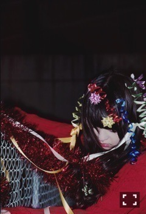

| 2015/05 13 Wed | 確立。641回目 |
12枚目シングル選抜。
前回とほぼ同じ位置になりました。
経験したことをまだ外に
うまく伝えられていません。
前回の期間は満足できる結果では
なかったと思います。
それほど壁が高いのも実感しました。
たくさん焦りました。
今まで以上にいろんなことを
考え込んでしまいました。
環境の変化にうまく対応できる力を
つけなきゃいけません。
まず、個人として確立させて
乃木坂に貢献したい。
自分にとっても
グループにとっても
今年はとても大事な期間です。
この期間に選抜に
選ばれていることへの
有り難みを持って
しっかりと臨みたいです。
個人的には
ガールズルール以来の夏曲選抜
めちゃくちゃ嬉しいです。
6枚目の期間は楽しかった
という思い出しかないんです。
あの頃の気持ちは、
アンダーで1年やってた時より
素直だったなと思います。
前に行きたいとか思ってなかったし
入れるだけで嬉しいと思ってたし、
きっと、そこまでグループと
真正面から向き合ってなかったから
なのかもしれないけど。
素直に嬉しい、楽しい時
思う
気持ちも大切にして、
夏を盛り上げていけたらいいな。
今回のセンターは生駒。
同い年として支えられる
余裕もつくっていきたい。
というか、ちゃんと並ばないとな。
やっぱり応援してくださる方が
喜んでくれるのがいちばんです！
私が喜んでると
一緒に喜んでくれる人が
たくさんいるんです。
これからも、
気持ちを共有していきたいです。
味方がたくさんいるんだから。
もっと楽しまなければ！
乃木坂46全員が
個人の活躍ができるように
私ももっとがんばります！
全員で一つになって
良いライブを、作品をつくって
たくさんの人に知ってほしい。
好きになってほしい。
これから
12枚目の制作も
舞台じょしらくも
映画もドキュメンタリーも
ツアーもあります。
盛りだくさんです。
夏の暑さに負けず、
がんばるぞーーー！
応援よろしくお願いします。
成人を迎える前に
もう一歩成長しなきゃ。


CUTiE 万理華の脳内#3
見てね！！
伊藤万理華
コメント(651)
2015/05/13 16:00